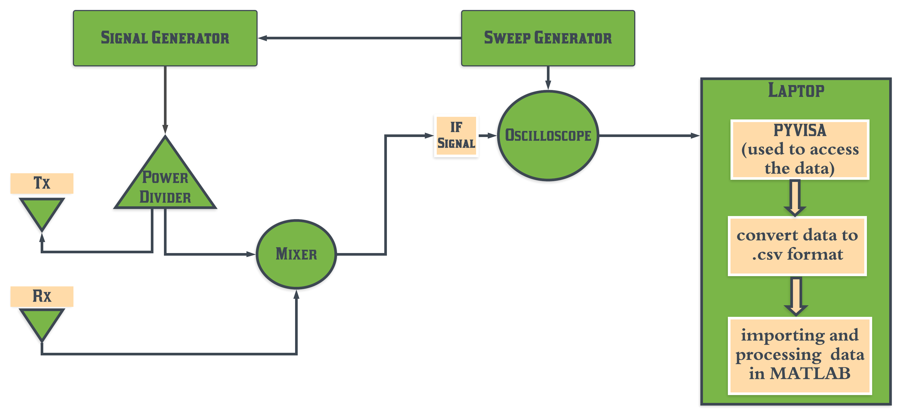

WiTrack is a device that tracks the 3-D motion of the user from the radio signals reflected off their body. It works even if the person is occluded from the WiTrack device or in a different room. WiTrack does not require the user to wear any kind of wearable device. It transmits wireless signals whose power is significantly lower than Wi-Fi or cellular transmissions. It can be incorporated into consumer electronics and has a wide set of applications.
The device transmits a radio signal and uses its reflections to estimate the time it takes the signal to travel from the transmitting antenna to the reflecting object and back to each of the receiving antennas. WiTrack then uses its knowledge of the position of the antennas to create a geometric reference model, which maps the round trip delays observed by the receive antennas to a 3D position of the reflecting body.
A simplistic way to look at the model we implemented is by referring to the flowchart shown below.
In near future, we would attempt to miniaturize our model, thereafter generate a heat map of the human body in real time,and finally manifest a gesture control application through the same.
{kind=link}